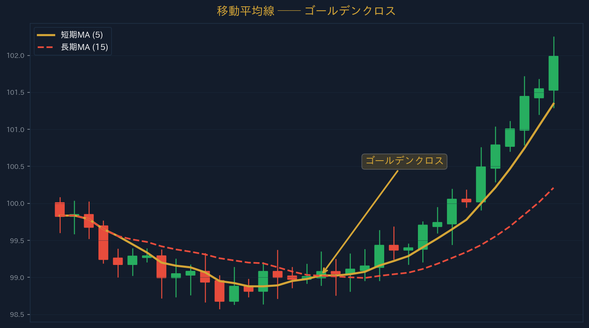
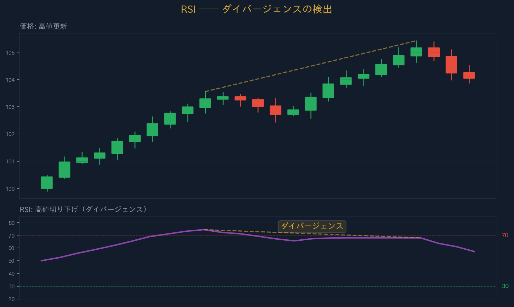
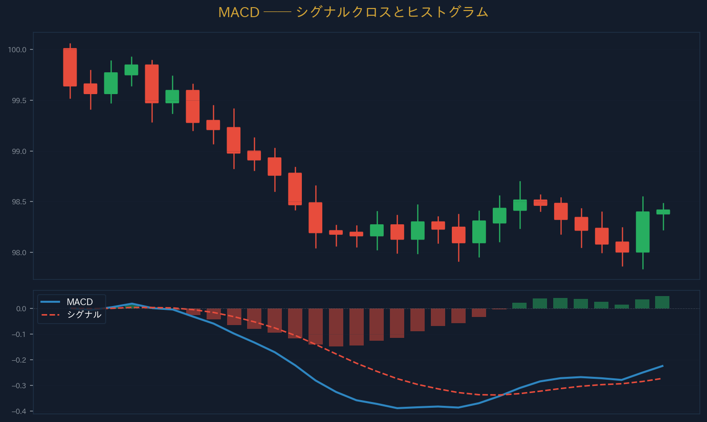
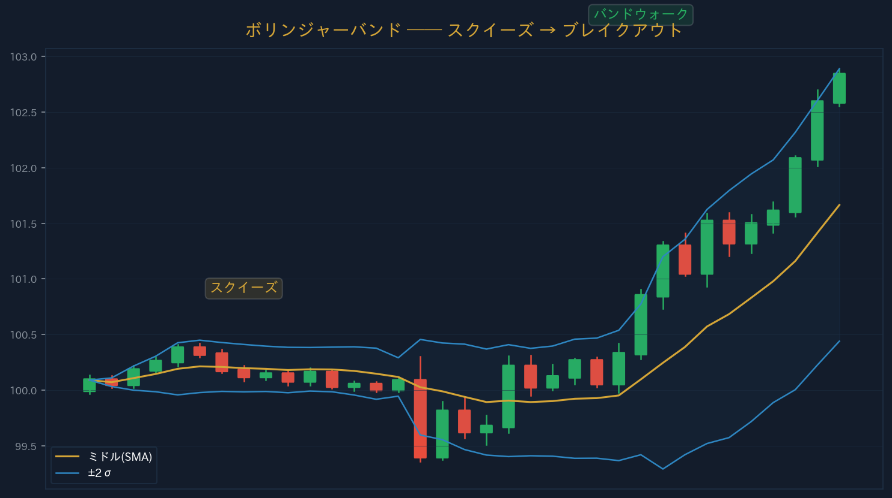
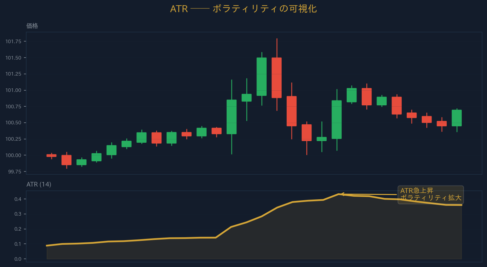

← Back
Section 10 — テクニカルインジケーター
←
1 / 12
→
SECTION 10
テクニカルインジケーター
Technical Indicators ── 価格データを数値化する
URIKAI Trading Academy
インジケーターの分類
価格・出来高の
過去データ
に数学的計算を適用して導出される補助指標
オシレーター系
（RSI、ストキャス）── 買われすぎ/売られすぎを示唆
トレンド系
（MA、MACD）── トレンドの方向と強さを確認
すべてのインジケーターは
過去の価格データ
から算出される
同じ種類を重複させない（RSI＋ストキャスは冗長）
POINT：インジケーターは「確認ツール」であり、単独のエントリーシグナルではない。
チャート＋インジケーター
20 EMA
200 SMA
RSI (14)
70
30
推奨組み合わせ
MA（方向）
RSI（タイミング）
テクニカルインジケーター | URIKAI Trading Academy
移動平均線（Moving Averages）
SMA
（単純平均）vs
EMA
（直近の価格に重みを置く）
期間：
20
（短期）、
50
（中期）、
200
（長期）
ゴールデンクロス
＝短期MAが長期MAを上抜け → 上昇シグナル
デッドクロス
＝短期MAが長期MAを下抜け → 下落シグナル
トレンドフィルター：価格がMAの上＝上昇基調、下＝下落基調

テクニカルインジケーター | URIKAI Trading Academy
RSI（Relative Strength Index）
一定期間の上昇幅と下落幅の比率から計算（期間14が標準）
70以上
＝買われすぎ（過熱）、
30以下
＝売られすぎ
50ライン
＝強気/弱気の境界線
ダイバージェンス
：価格は高値更新なのにRSIは下降 → 弱体化警告
強いトレンド中は買われすぎ/売られすぎが長期間続く場合がある

テクニカルインジケーター | URIKAI Trading Academy
MACD（Moving Average Convergence Divergence）
MACDライン
＝短期EMA(12) − 長期EMA(26)
シグナルライン
＝MACDラインの9期間EMA
ヒストグラム
＝MACD − シグナル（モメンタムの強さ）
MACDがシグナルを
上抜け＝買いシグナル
ゼロライン
超え＝上昇トレンド確認

テクニカルインジケーター | URIKAI Trading Academy
ボリンジャーバンド
ミドルバンド＝
20SMA
、上下＝
±2σ
（標準偏差）
価格の約
95%
がバンド内に収まる
スクイーズ
＝バンド幅縮小 → ブレイクアウトの前兆
エクスパンション
＝バンド幅拡大 → トレンド発生中
バンドウォーク
＝強いトレンドでバンドに沿って移動

テクニカルインジケーター | URIKAI Trading Academy
ATR（Average True Range）
一定期間の「真の値幅」の平均＝
ボラティリティの数値指標
方向性は示さない ── 上昇/下落のどちらにも使える
SL設定
に活用：SL＝エントリー価格 ± ATR × 1.5〜2.0
ポジションサイズ調整
：ATR高→ロット減、ATR低→ロット増
ATR急上昇＝市場の変調、重要イベント発生の可能性
POINT：ATRは最も実用的なインジケーター。SLの設定とポジションサイズの調整に直接使える。

テクニカルインジケーター | URIKAI Trading Academy
一目均衡表（Ichimoku Cloud）
転換線
（9期間）＋
基準線
（26期間）でクロスシグナル
雲（Cloud）
＝先行スパンA/Bで形成。将来のS/Rゾーン
価格が雲の上＝
強気
、下＝
弱気
、中＝方向性なし
日本発のインジケーター、
1つで5つの情報
を提供する総合指標
POINT：インジケーターは2〜3個。トレンド系＋オシレーター系を1つずつが最適。
一目均衡表 ── 雲・転換線・基準線
一目均衡表
━ 転換線 (9)
╌ 基準線 (26)
░ 雲（Kumo）
雲の上 ＝ 強気
雲の下 ＝ 弱気
1つで5つの情報を提供する日本発の総合指標
テクニカルインジケーター | URIKAI Trading Academy
まとめ
分類
オシレーター系（RSI等）とトレンド系（MA等）
MA
トレンド方向の判断、ゴールデン/デッドクロス
RSI
買われすぎ/売られすぎ、ダイバージェンス
MACD
MACDクロス＋ヒストグラムでモメンタム
ボリンジャー
スクイーズ→ブレイク、バンドウォーク
ATR
ボラティリティ計測、SL設定に直結
一目均衡表
雲でトレンド・S/Rを一目で把握
テクニカルインジケーター | URIKAI Trading Academy
確認テスト ── 3問正解で受講完了
Q1. RSIの買われすぎ水準は？
70以上
50以上
Q2. ATRは何を計測する指標？
トレンドの方向
ボラティリティ（値幅）
Q3. ゴールデンクロスとは？
短期MAが長期MAを上抜け
短期MAが長期MAを下抜け
回答を確定する
テクニカルインジケーター | URIKAI Trading Academy
Section 10 Complete
Next → チャートパターン
Home
URIKAI Trading Academy
← → キーでページ移動